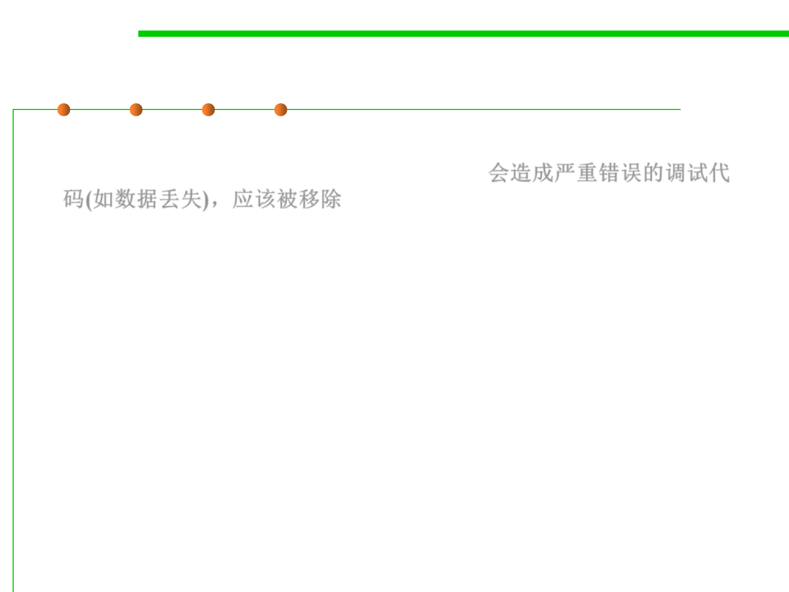

7.3 Assertions and Defensive Programming
(3) Remove code that results in hard crashes
▪ If your program contains debugging code that could cause a loss of
data, take it out of the production version. 会造成严重错误的调试代
码(如数据丢失)，应该被移除
▪ During development, when your program detects an error, you’d
like the error to be as noticeable as possible so that you can fix it.
– Often, the best way to accomplish such a goal is to have the program print
a debugging message and crash when it detects an error.
– This is useful even for minor errors.
▪ During production, your users need a chance to save their work
before the program crashes and are probably willing to tolerate a
few anomalies in exchange for keeping the program going long
enough for them to do that.
– Users don’t appreciate anything that results in the loss of their work,
regardless of how much it helps debugging and ultimately improves the
quality of the program.